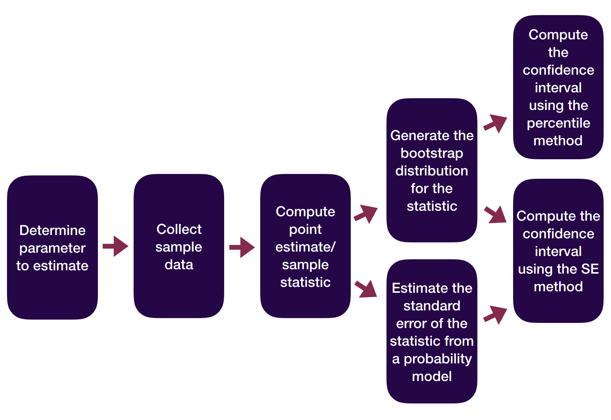

Theory-Based Inference
Kelly McConville
Stat 100
Week 12 | Fall 2023
Announcements
- No sections or wrap-ups this week.
- P-Set 8 is due at the usual time (Tues 5pm).
- No new p-set or lecture quiz this week.
- OH schedule for Thanksgiving Week:
- Sun, Nov 19th - Tues, Nov 21st: Happening with some modifications
- No OHs Wed, Nov 22nd - Sun, Nov 26th!
Goals for Today
A bit of thanks.
Learn theory-based statistical inference methods.
Introduce a new group of test statistics based on z-scores.
Generalize the SE method confidence interval formula.
Statistical Inference Zoom Out – Estimation

Statistical Inference Zoom Out – Testing

Sample Statistics as Random Variables
Sample statistics can be recast as random variables.
Need to figure out what random variable is a good approximation for our sample statistic.
- Then use the properties of that random variable to do inference.
Sometimes it is easier to find a good random variable approximation if we standardize our sample statistic first.
Z-scores
All of our test statistics so far have been sample statistics.
Another commonly used test statistic takes the form of a z-score:
\[ \mbox{Z-score} = \frac{X - \mu}{\sigma} \]
Standardized version of the sample statistic.
Z-score measures how many standard deviations the sample statistic is away from its mean.
Z-score Example
- \(\hat{p}\) = proportion of Maples in a sample of 50 trees
\[ \hat{p} \sim N \left(0.138, 0.049 \right) \]
- Suppose we have a sample where \(\hat{p} = 0.05\). Then the z-score would be:
\[ \mbox{Z-score} = \frac{0.05 - 0.138}{0.049} = -1.8 \]
Z-score Test Statistics
- A Z-score test statistic is one where we take our original sample statistic and convert it to a Z-score:
\[ \mbox{Z-score test statistic} = \frac{\mbox{statistic} - \mu}{\sigma} \]
- Allows us to quickly (but roughly) classify results as unusual or not.
- \(|\) Z-score \(|\) > 2 → results are unusual/p-value will be smallish
- Commonly used because if the sample statistic \(\sim N(\mu, \sigma)\), then
\[ \mbox{Z-score test statistic} = \frac{\mbox{statistic} - \mu}{\sigma} \sim N(0, 1) \]
Let’s consider theory-based inference for a population proportion.
Statistical Inference Zoom Out – Estimation
Statistical Inference Zoom Out – Testing
Inference for a Single Proportion – Testing
Let’s consider conducting a hypothesis test for a single proportion: \(p\)
Need:
- Hypotheses
- Same as with the simulation-based methods
- Test statistic and its null distribution
- Use a z-score test statistic and a standard normal distribution
- P-value
- Compute from the standard normal distribution directly
Inference for a Single Proportion – Testing
Let’s consider conducting a hypothesis test for a single proportion: \(p\)
\(H_o: p = p_o\) where \(p_o\) = null value and \(H_a: p > p_o\) or \(H_a: p < p_o\) or \(H_a: p \neq p_o\)
By the CLT, under \(H_o\):
\[ \hat{p} \sim N \left(p_o, \sqrt{\frac{p_o(1-p_o)}{n}} \right) \]
Z-score test statistic:
\[ Z = \frac{\hat{p} - p_o}{\sqrt{\frac{p_o(1-p_o)}{n}}} \]
Use \(N(0, 1)\) to find the p-value once you have computed the test statistic.
Inference for a Single Proportion – Testing
Let’s consider conducting a hypothesis test for a single proportion: \(p\)
Example: Bern and Honorton’s (1994) extrasensory perception (ESP) studies
Inference for a Single Proportion – Testing
Let’s consider conducting a hypothesis test for a single proportion: \(p\)
Example: Bern and Honorton’s (1994) extrasensory perception (ESP) studies
# A tibble: 1 × 3
statistic p_value alternative
<dbl> <dbl> <chr>
1 3.02 0.00125 greater Note: There is also a base R function called prop.test() but its arguments are different.
Theory-Based Confidence Intervals
Suppose statistic \(\sim N(\mu = \mbox{parameter}, \sigma = SE)\).
95% CI for parameter:
\[ \mbox{statistic} \pm 2 SE \]
Theory-Based CIs in Action
Let’s consider constructing a confidence interval for a single proportion: \(p\)
By the CLT,
\[ \hat{p} \sim N \left(p, \sqrt{\frac{p(1-p)}{n}} \right) \]
P% CI for parameter:
\[\begin{align*} \mbox{statistic} \pm z^* SE \end{align*}\]
Theory-Based CIs in Action
Example: Bern and Honorton’s (1994) extrasensory perception (ESP) studies
# Use probability model to approximate null distribution
prop_test(esp, response = guess, success = "correct",
z = TRUE, conf_int = TRUE, conf_level = 0.95)# A tibble: 1 × 5
statistic p_value alternative lower_ci upper_ci
<dbl> <dbl> <chr> <dbl> <dbl>
1 -6.45 1.12e-10 two.sided 0.274 0.374- Don’t use the reported test statistic and p-value!
Theory-Based CIs
P% CI for parameter:
\[ \mbox{statistic} \pm z^* SE \]
Notes:
Didn’t construct the bootstrap distribution.
Need to check that \(n\) is large and that the sample is random/representative.
- Condition depends on what parameter you are conducting inference for.
Interpretation of the CI doesn’t change.
For some parameters, the critical value comes from a \(t\) distribution.
Now we have a formula for the Margin of Error.
- That will prove useful for sample size calculations.
Now let’s explore how to do inference for a single mean.
Inference for a Single Mean
Example: Are lakes in Florida more acidic or alkaline? The pH of a liquid is the measure of its acidity or alkalinity where pure water has a pH of 7, a pH greater than 7 is alkaline and a pH less than 7 is acidic. The following dataset contains observations on a sample of 53 lakes in Florida.
Cases:
Variable of interest:
Parameter of interest:
Hypotheses:
Inference for a Single Mean
Let’s consider conducting a hypothesis test for a single mean: \(\mu\)
Need:
- Hypotheses
- Same as with the simulation-based methods
- Test statistic and its null distribution
- Use a z-score test statistic and a t distribution
- P-value
- Compute from the t distribution directly
Inference for a Single Mean
Let’s consider conducting a hypothesis test for a single mean: \(\mu\)
\(H_o: \mu = \mu_o\) where \(\mu_o\) = null value
\(H_a: \mu > \mu_o\) or \(H_a: \mu < \mu_o\) or \(H_a: \mu \neq \mu_o\)
By the CLT, under \(H_o\):
\[ \bar{x} \sim N \left(\mu_o, \frac{\sigma}{\sqrt{n}} \right) \]
Z-score test statistic:
\[ Z = \frac{\bar{x} - \mu_o}{\frac{\sigma}{\sqrt{n}}} \]
- Problem: Don’t know \(\sigma\): the population standard deviation of our response variable!
Inference for a Single Mean
Z-score test statistic:
\[ t = \frac{\bar{x} - \mu_o}{\frac{s}{\sqrt{n}}} \]
- Problem: Don’t know \(\sigma\): the population standard deviation of our response variable!
- For our example, \(\sigma\) would be the standard deviation of the Ph level for all lakes in Florida.
- Solution: Plug in \(s\): the sample standard deviation of our response variable!
- For our example, \(s\) would be the standard deviation of the Ph level for the sampled lakes in Florida.
- Use \(t(\mbox{df} = n - 1)\) to find the p-value
Inference for a Single Mean
Why are we using type = "bootstrap" when constructing a null distribution?!
Inference for a Single Mean
What probability function is a good approximation to the null distribution?

Inference for a Single Mean
What probability function is a good approximation to the null distribution?
P-value options
P-value using the generated null distribution:
Do-it-all function:
Statistical Inference using Probability Models
We went through theory-based inference for \(p\) and for \(\mu\).
There are similar results for other parameters. But the specific named random variable may change!
- Will extend beyond inference for 1 variable next time.
Have a lovely Thanksgiving Break everyone!
Reminders:
- No sections or wrap-ups this week.
- P-Set 8 is due at the usual time (Tues 5pm).
- No new p-set or lecture quiz this week.
- OH schedule for Thanksgiving Week:
- Sun, Nov 19th - Tues, Nov 21st: Happening with some modifications
- No OHs Wed, Nov 22nd - Sun, Nov 26th!